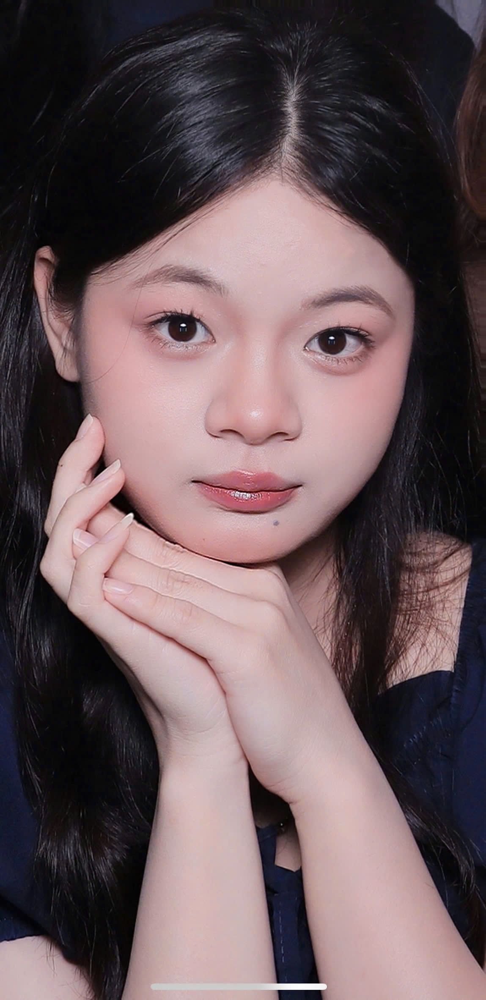

日本語学習者 ✦ ポートフォリオ
Sinh viên Nhật Bản học · Đại học Việt Nhật
こんにちは！
Portfolio này được xây dựng nhằm lưu trữ các sản phẩm học tập và mô tả quá trình phát triển kỹ năng số của bản thân tôi.
✨ Xem dự án của tôi
Rèn luyện kỹ năng tạo, đổi tên, sao chép, di chuyển, xóa tệp tin và thư mục một cách thành thạo trên Windows.
Phát triển kỹ năng tìm kiếm và đánh giá thông tin học thuật từ các nguồn đáng tin cậy.
Phát triển kỹ năng viết prompt hiệu quả để tận dụng tối đa khả năng của các mô hình ngôn ngữ lớn.
Thành thạo các công cụ hợp tác trực tuyến và thể hiện năng lực quản lý, điều phối cá nhân trong dự án nhóm.
Thành thạo việc sử dụng các công cụ AI tạo sinh để hỗ trợ quá trình sáng tạo nội dung số.
Phát triển kỹ năng sử dụng AI có trách nhiệm và đạo đức trong học tập và nghiên cứu.
Nhìn lại hành trình xây dựng Portfolio, tôi nhận ra đây không chỉ là một yêu cầu học thuật nhằm tập hợp sản phẩm bài tập, mà còn là cơ hội để tự nhìn nhận và đánh giá sự phát triển của bản thân.
Từ sự bỡ ngỡ ban đầu trước tốc độ phát triển của công nghệ, việc chủ động thiết kế website cá nhân đã giúp tôi kết nối các kiến thức rời rạc thành một hệ thống hoàn chỉnh. Việc nhìn thấy sự tiến bộ của bản thân qua từng tuần học là động lực lớn và là minh chứng cho quá trình trưởng thành về nhận thức số.
Tôi đã chuyển từ vai trò một "Người tiêu dùng số" sang "Người điều phối AI". AI không chỉ là công cụ hỗ trợ, mà còn là cộng sự giúp mở rộng khả năng tiếp cận tri thức và sáng tạo.
Với tư cách là sinh viên ngành Nhật Bản học, tôi mong muốn tiếp tục ứng dụng các kỹ năng số và AI vào học tập, nghiên cứu cũng như công việc trong tương lai.